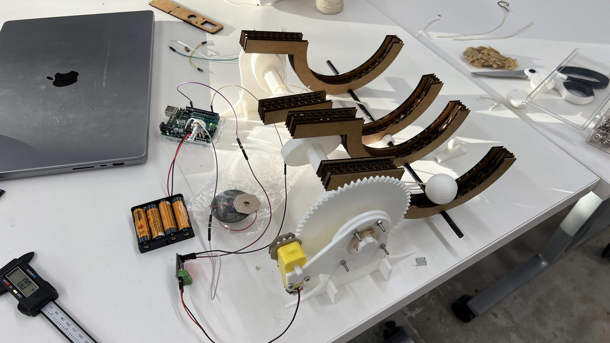

<br>
#### Week 2: Electric motors, hand tools and soldering
<font size="4">
In this session we talked about three major topics: electric motors, hand tools and soldering. So for this weeks assignment we have to apply a bit
of all the knowledge we gained. The task is to build a kinematic sculpture and include circuitry.
<br>
I decided to build a structure that moves small table tennis balls in mechanically programmable semi circles from side to side.
My idea was to incorporate a gear reduction system that increases the torque output of the small electric motor and turns an octagonal
camshaft. On the camshaft are small half ellipses that move the semi circles up and down. Since there are multiple of these semi circles they can move
in mesmerizing ways e.g. in a sine curve. The ellipses can be moved by hand so the design can be changed very easily. A video of the working sculpture is on the <a href="../04_microcontroller_programming/index.html">microcontroller programming</a> page, since I incorporated
an Arduino to control the movement of the sculpture.
<br>
<br>
<br>
At first I wanted to laser cut most of the parts, but since I had little to no time to access the laser cutter until the assignment was due,
I decided to 3D print the majority of the parts.
Here is a timelapse of some of the feet getting printed!:
<video width="816" height="480" controls>
<source src="IMG_0001.mp4" type="video/mp4">
</video>
<br>
<br>
<br>
Here is a video of the CAD modelling process:
<br>
<video width="816" height="480" controls>
<source src="Screen Recording 2023-07-03 at 21.16.09.mp4" type="video/mp4">
</video>
<br>
And here is a picture of the sculpture being assembled
<br>
<p></p>